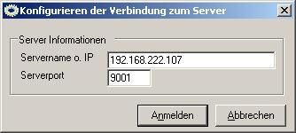
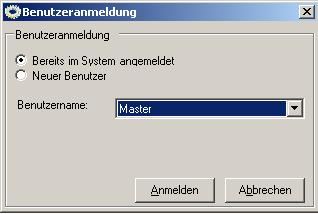
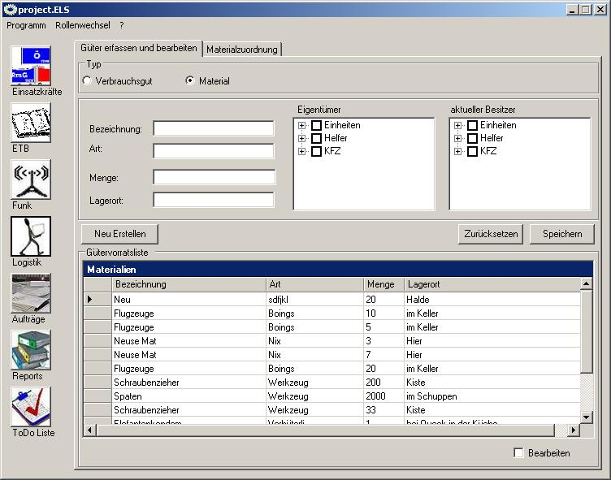
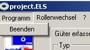
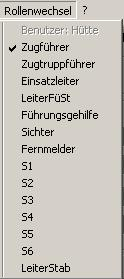
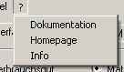
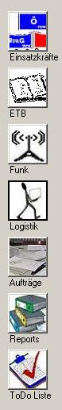

|
|
|
|
Zurück
pELS-Client
Erster Start des Clients
Hinweis: Da das project.ELS eine Client-Server Anwendung ist, wird ein laufender & konfigurierter Server vorrausgesetzt. Wenden Sie sich an den Systemadministrator um die Adresse und den Port des pELS-Servers zu erfragen.
Verbinden zum Server

Im ersten Fenster müssen Sie IP oder DNS-Name und den Port des pELS-Servers angeben. Mit Drücken des Button Anmelden wird eine Verbindung aufgebaut.
Hinweis: Sollten Sie sich nicht zum Server verbinden können wenden Sie sich an Ihren Sytsemadministrator und überprüfen Sie ggf. Ihre Firewalleinstellungen.
Wahl eines Benutzers

Nachdem die Verbindung zwischen Client und Server steht, können Sie einen Benutzer wählen. In der Auswahlbox befinden sich alle dem System bekannten Benutzer. Sollten Sie einen neuen Benutzer anlegen wollen, wählen Sie die Option Neuer Benutzer. Dabei muss noch die Systemrolle des Benutzers angeben werden.
Generell gelten keine Einschränkungen für Benutzer & Benutzernamen. Es wird aber ausdrücklich empfohlen Namen eindeutig zu wählen. Das Anmelden mehrer Clients unter dem gleichen Benutzernamen ist möglich.
Die Client Oberfläche

Der Client wird in 3 Grundbereiche unterteilt.
HauptMenü
Portalauswahl (linke Leiste)
Portalanzeigebereich(großer Anzeigebereich)
Das Hauptmenü
|  | Im Hauptmenü kann unter Programm der Client beendet werden.
|
|  | Unter dem
Menüpunkt Rollenwechsel kann der Benutzer seine Systemrolle wechseln. Der Wechsel einer Systemrolle löst ein Systemereignis aus. Systemrollen schränken die Sicht auf Details in den Portalen ein. Damit soll die Menge der Informationen auf das notwendige Maß eingeschränkt werden. Sollte es trotzdem notwendig sein, dass ein Nutzer über seinen Tätigkeitsbereich hinaus auf Informationen zugreifen muss, kann er jederzeit die Systemrolle über dieses Menü ändern.
|
|  | Unter Informationen finden Sie die Dokumentation (also auch diese Seite) als Windows-Helpfile, einen Link zur Homepage und die
Infos über das Programm.
|
|
Portalauswahl
|  |
Auf der Linken Seite finden Sie alle geladenen Portale. Das aktive Portal findet sich rechts im Anzeigebereich wieder. in der Auswahlliste ist das momentan aktive Portal als
gedrückter Knopf dargestellt (hier Logistik).
Nähere Informationen zu den einzelnen Portalen finden Sie in der Doku der Portale:
Portal Einsatzkräfte
Portal ETB
Portal Funk
Portal Logistik
Portal Auträge
Portal Report
Portal Todo
Sollte die Software um weitere Portale erweitert werden, so werden diese ebenfalls dort angezeigt.
|
Portalanzeigebereich
Dort wird die Oberfläche des aktuell aktiven Portals angezeigt. Nähere Informationen zu den Portalen finden sich in der Nutzerhilfe dazu.
Zurück
project.ELS version 1.0
|
|